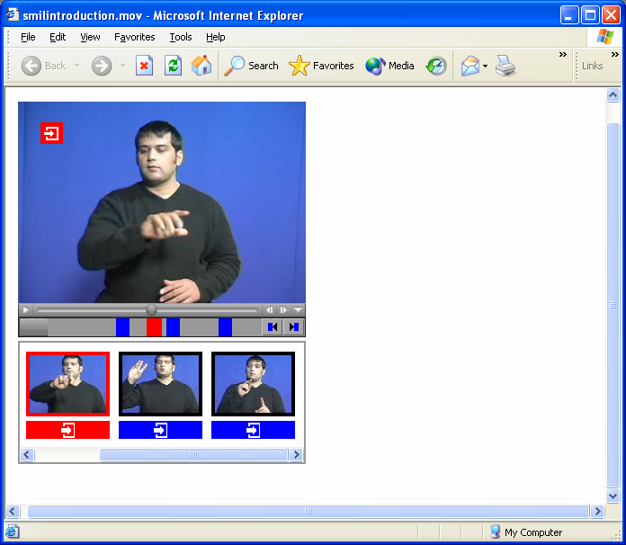
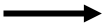
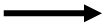

| Created with the Web Accessibility Wizard |
|
Our Proposal: |
Video
(Concept of "Texas" is current)
Thumbnail
Link Bar
Long Description: This is the main screenshot on this slide. The screenshot is dominated by a video of a signer. In the top left is a red icon of a arrow entering a page. Below the video is the link density bar and below that are thumbnail images from the video and below each is a coloured link button.
Link Button
Slide Links:
| Text Only Version |